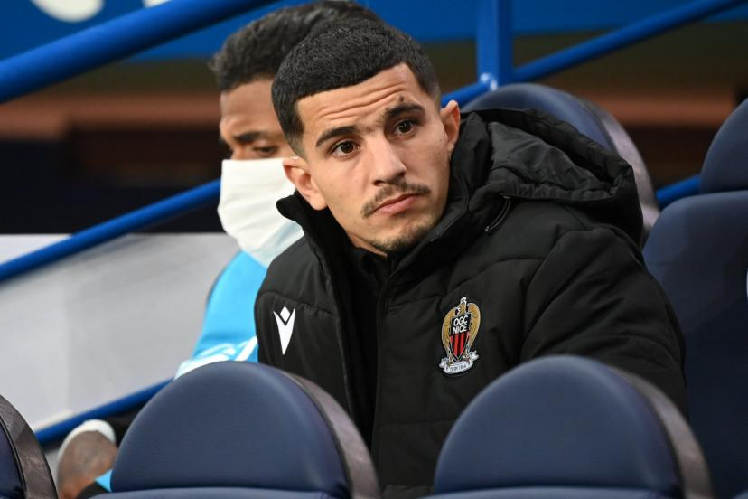

Bienvenue sur la page de Youcef ATAL

Biographie
Youcef Atal, né le 17 mai 1996 à Tizi ouzou Boghni en Algérie, est un footballeur international algérien. Il a évolué au poste d'arrière droit de l'OGC Nice en Ligue 1
Carrière en Club
Paradou AC (2015-2017)
KV Courtrai 2017 2018
OGC Nice depuis 2018